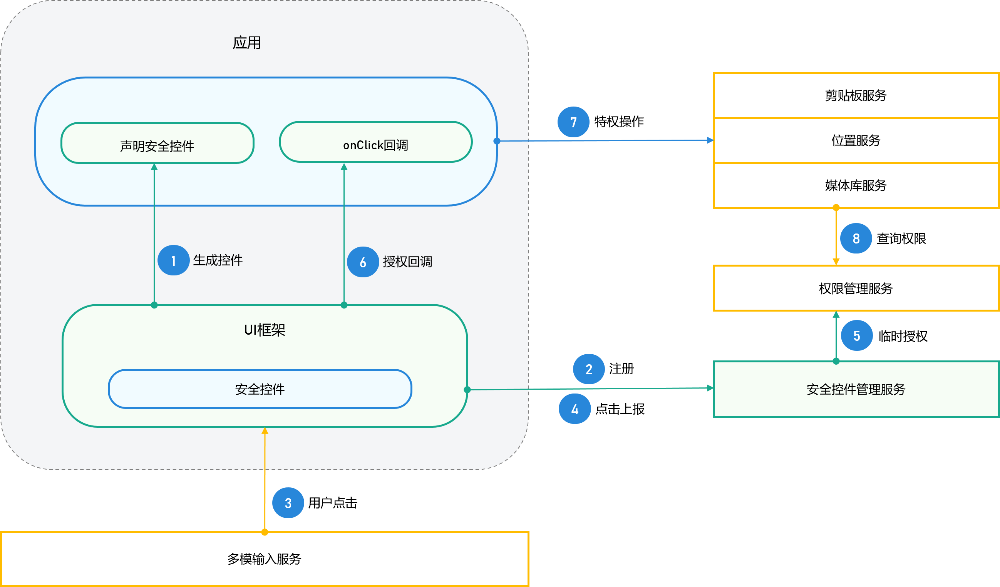
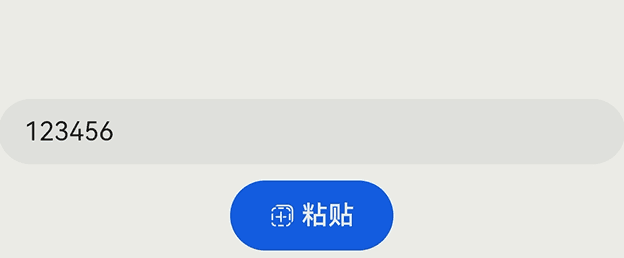
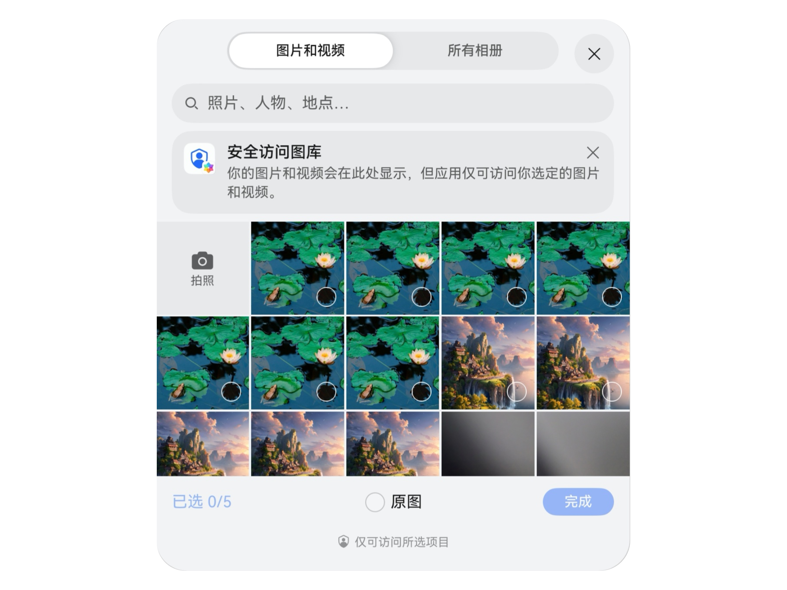
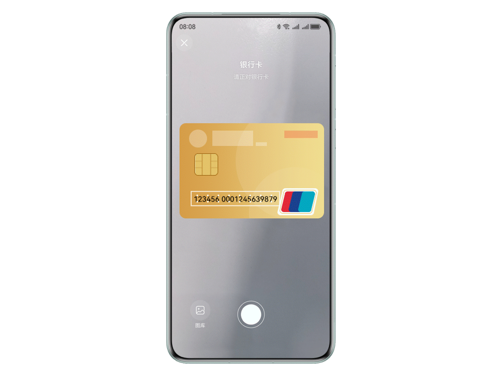
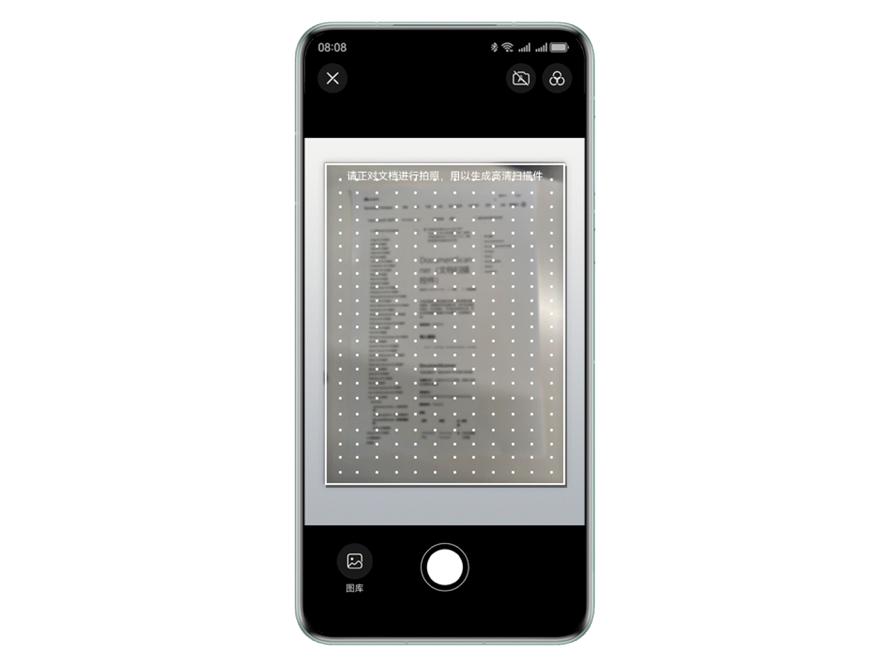

1 Picker安心取，用户主导安全新体验
1.2 安全控件
安全控件是系统提供的一组系统实现的ArkUI组件，应用集成这类组件就可以实现在用户点击后自动授权，而无需弹窗授权。它们可以作为一种“特殊的按钮”融入应用页面，实现用户点击即许可的设计思路。
相较于动态申请权限的方式，安全控件可基于场景化授权，简化开发者和用户的操作，主要优点有：
- 用户可掌握授权时机，授权范围最小化。
- 授权场景可匹配用户真实意图。
- 减少弹窗打扰。
- 开发者不必向应用市场申请权限，简化操作。
1.2.1 安全控件运行机制
运行机制整体方案由安全控件UI组件、安全控件管理服务、安全控件增强组成：
- UI组件：实现了固定文字图标的样式，便于用户识别，同时提供了相对丰富的定制化能力，便于开发者定制。
- 控件管理服务：提供控件注册管理能力、控件临时授权机制、管理授权生效周期，确保应用后台、锁屏下无法注册使用安全控件。
- 安全增强：实现了地址随机化、挑战值检查、回调UI框架复核控件信息、调用者地址检查、组件防覆盖、真实点击事件校验等机制，防止应用开发者通过混淆、隐藏、篡改、仿冒等方式滥用授权机制，泄露用户隐私。
开发者调用接口时，运作流程如图所示。

1.2.2 安全控件汇总
1.2.2.1 粘贴控件
在应用集成粘贴控件后，用户点击粘贴控件，应用读取剪贴板数据时不会弹窗提示。可以用于任何应用需要读取剪贴板的场景，避免弹窗提示对用户造成干扰。
例如，用户在应用外（如短信）复制了验证码，要在应用内粘贴验证码。用户原来在进入应用后，还需要长按输入框、在弹出的选项中点击粘贴，才能完成输入。而使用粘贴控件，用户只需进入应用后直接点击粘贴按钮，即可一步到位。

开发者应注意，使用了ArkUI的输入框会自动集成长按菜单栏的粘贴控件。
1.3 系统Picker
1.3.1 Picker介绍
系统picker是拉起系统资源的一种方式，由于系统Picker已经获取了对应权限的预授权，开发者使用系统Picker时，无需再次申请权限也可临时受限访问对应的资源。
使用系统Picker组件拉起系统应用的场景主要有：联系人Picker（Contacts Picker），地图Picker，相机Picker（Camera Picker），扫码Picker，卡证识别Picker，文档扫描Picker，文件Picker，音频Picker和照片Picker（PhotoViewPicker）等，详细可参考拉起系统应用。
1.3.2 Picker汇总
1.3.2.1 照片Picker
PhotoViewPicker支持开发者通过特定接口拉起系统图库，用户自行选择待分享的资源，然后最终完成分享。该Picker承自photoAccessHelper相册管理模块，该模块提供相册管理模块能力，包括创建相册以及访问、修改相册中的媒体数据信息等。
同时PhotoPicker组件也可用于访问图片/视频，在用户选择所需要的图片资源后，直接返回该图片资源，而不需要授予应用读取图片文件的权限，即可完成图片或视频文件的访问和读取。

参考案例
- 视频课程中介绍了扫码场景中如何通过picker方式扫描本地图片，详情可参考《帮助应用快速构建强大的扫码能力》；
- 云开发服务文章通过云存储实现了上传图片并返回图片地址功能，详情可参考《云开发服务（ArkTS）- 9.4 使用云存储管理文件》
1.3.2.2 联系人Picker
Contacts Kit提供联系人Picker（Contacts Picker），用于拉起联系人应用，读取联系人数据人。
Contacts Picker：当用户选择联系人的时候，通过Picker的方式，拉起联系人列表，引导用户完成界面操作，接口本身无需申请权限。
当前能力受限开放，需要申请受限开放权限ohos.permission.READ_CONTACTS或ohos.permission.WRITE_CONTACTS。该权限通常不允许三方应用申请，仅符合指定场景的应用可申请该权限。
1.3.2.3 文件Picker
DocumentViewPicker适用于文件类型文件的选择与保存。DocumentViewPicker对接的选择资源来自于FilePicker, 负责文件类型的资源管理，文件类型不区分后缀，比如浏览器下载的图片、文档等，都属于文件类型。
参考案例
文件管理案例介绍了如何使用DocumentViewPicker的save()方法向用户目录下创建一个文件并返回它的uri，和select()方法择想要访问的文件，并返回其uri，详情可参考《实现文件管理功能 - 6 用户目录的文件读写》
1.3.2.4 相机Picker
Camera Kit提供了相机picker模块，本模块提供相机拍照与录制的能力。应用可以自行选择媒体类型实现拍照和录制的功能。该类接口，需要应用在界面UIAbility中调用，否则无法拉起cameraPicker应用，具体可参考Camera Picker。
如果开发者仅是需要拉起系统相机拍摄一张照片、录制一段视频，可直接使用CameraPicker，无需申请相机权限，直接拉起系统相机完成拍摄。
开发者需在release模式下调用系统相机（CameraPicker），在debug模式下会显示异常。
1.3.2.5 卡证识别Picker
卡证识别控件提供身份证（目前仅支持中国大陆二代身份证，且不包含民汉双文身份证）、行驶证、驾驶证、护照、银行卡等证件的结构化识别服务，满足卡证的自动分类功能，系统可自动判断所属卡证类型并返回结构化信息和卡证图片信息。
对于需要填充卡证信息的场景，如身份证、银行卡信息等，可使用卡证识别控件读取OCR（Optical Character Recognition）信息，将结果信息返回后进行填充。支持单独识别正面、反面，或同时进行双面识别。

使用该控件会创建弹窗，并以全模态形式展示。因此，该控件被拉起或退出时均会触发接入页面的生命周期变化，拉起时会触发页面的onPageHide，退出时则触发页面的onPageShow。
参考案例
场景化视觉服务文章介绍了卡证识别能力，包括识别身份证、行驶证、驾驶证等，详情可参考《机器学习-场景化视觉服务》。
1.3.2.6 文档扫描Picker
文档扫描控件提供拍摄文档并转换为高清扫描件的服务。仅需使用手机拍摄文档，即可自动裁剪和优化，并支持图片保存和分享；同时支持拍摄或从图库选择图片识别表格，生成表格文档。
可广泛用于教育办公场景，扫描文档、票据、课堂PPT和书籍等输出图片供用户完成发送、存档等操作。

参考案例
场景化视觉服务文章同时介绍了文档扫描能力，包括拍摄文档或从图库中选择文档图片，将其转换为高清扫描件；拍摄或从图库选择图片识别表格，生成表格文档，详情可参考《机器学习-场景化视觉服务》。